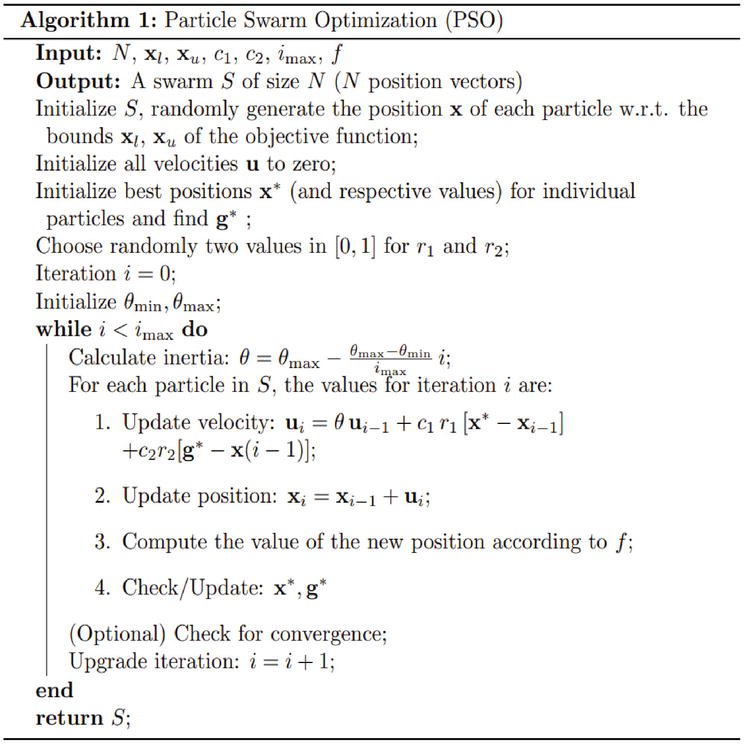

PSO simulates the social behavior of birds within a flock. In our context, the "flock" is a set of potential solutions (particles) that move through the problem space, looking for the optimum.
Each particle has two main attributes:
The particles are guided by two "best" values:
In PSO, particles update their velocity and position with the following considerations:

Initialization:
Iteration Loop:
Convergence Check (Optional):
"""
import sys
import numpy as np
class PSO:
def __init__(self, particles, velocities, fitness_function,
w=0.8, c_1=1, c_2=1, max_iter=100, auto_coef=True):
self.particles = particles
self.velocities = velocities
self.fitness_function = fitness_function
self.N = len(self.particles)
self.w = w
self.c_1 = c_1
self.c_2 = c_2
self.auto_coef = auto_coef
self.max_iter = max_iter
self.p_bests = self.particles
self.p_bests_values = self.fitness_function(self.particles)
self.g_best = self.p_bests[0]
self.g_best_value = self.p_bests_values[0]
self.update_bests()
self.iter = 0
self.is_running = True
self.update_coef()
def __str__(self):
return f'[{self.iter}/{self.max_iter}] $w$:{self.w:.3f} - $c_1$:{self.c_1:.3f} - $c_2$:{self.c_2:.3f}'
def next(self):
if self.iter > 0:
self.move_particles()
self.update_bests()
self.update_coef()
self.iter += 1
self.is_running = self.is_running and self.iter < self.max_iter
return self.is_running
def update_coef(self):
if self.auto_coef:
t = self.iter
n = self.max_iter
self.w = (0.4/n**2) * (t - n) ** 2 + 0.4
self.c_1 = -3 * t / n + 3.5
self.c_2 = 3 * t / n + 0.5
def move_particles(self):
# add inertia
new_velocities = self.w * self.velocities
# add cognitive component
r_1 = np.random.random(self.N)
r_1 = np.tile(r_1[:, None], (1, 2))
new_velocities += self.c_1 * r_1 * (self.p_bests - self.particles)
# add social component
r_2 = np.random.random(self.N)
r_2 = np.tile(r_2[:, None], (1, 2))
g_best = np.tile(self.g_best[None], (self.N, 1))
new_velocities += self.c_2 * r_2 * (g_best - self.particles)
self.is_running = np.sum(self.velocities - new_velocities) != 0
# update positions and velocities
self.velocities = new_velocities
self.particles = self.particles + new_velocities
def update_bests(self):
fits = self.fitness_function(self.particles)
for i in range(len(self.particles)):
# update best personal value (cognitive)
if fits[i] < self.p_bests_values[i]:
self.p_bests_values[i] = fits[i]
self.p_bests[i] = self.particles[i]
# update best global value (social)
if fits[i] < self.g_best_value:
self.g_best_value = fits[i]
self.g_best = self.particles[i]
"""
next method corresponds to the iteration loop, where velocities and positions
are updated, and the best values are potentially updated as well.update_coef method corresponds to the calculation of inertia in the
pseudo-code, although with a specific strategy for changing the coefficients over time.move_particles method represents the velocity and position update steps.update_bests method corresponds to the evaluation of the new position and
update of and .We define a PSO class that encapsulates all the behaviors of the particle swarm.
__init__method):def
__init__(self, particles, velocities, fitness_function, w=0.8, c_1=1, c_2=1, max_iter=100,
auto_coef=True):
fitness_function, which evaluates how good a position (solution) is.w, c_1, and c_2 are the coefficients for inertia, cognitive, and social
components, respectively.max_iter is the maximum number of iterations (times the swarm will move).auto_coef allows for dynamic adjustment of coefficients.__str__ method):next method):def next(self):
update_coef method):If auto_coef is true, this method updates the coefficients based on the iteration number. This is an
advanced feature that can help the swarm converge more effectively.
move_particles method):def move_particles(self):
update_bests method):def update_bests(self):
# Define your problem's fitness_function. def fitness_function(positions): # Your implementation here. pass # Initialize particles and velocities. particles = np.random.rand(100, 2) # 100 particles, 2-dimensional space. velocities = np.zeros((100, 2)) # Create the PSO instance. pso_instance = PSO(particles, velocities, fitness_function) # Run the PSO algorithm. while pso_instance.next(): print(pso_instance) # Access the best solution found. print(f'Best Position: {pso_instance.g_best}') print(f'Best Value: {pso_instance.g_best_value}')
And that's how we implement a basic PSO algorithm in Python! Now, you can try running the PSO on different optimization problems and see how it performs. Remember, the settings for the coefficients and the fitness function can greatly influence the efficiency and outcome of the PSO. Happy optimizing!